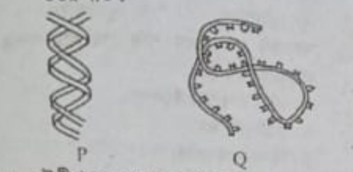
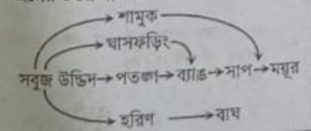

💡 ব্যাখ্যা: হাতীশুঁড় ফুলে কোনো বোঁটা বা বৃত্ত থাকে না, তাই এটি অবৃন্তক ফুল।
২. কোনটি ডিপ্লয়েড কোষ?
⚪ (ক) পরাগ মাতৃকোষ
⚪ (খ) পুং গ্যামেট
⚪ (গ) পরাগরেণু
⚪ (ঘ) ডিম্বাণু
💡 ব্যাখ্যা: পরাগ মাতৃকোষের ক্রোমোজোম সংখ্যা 2n (ডিপ্লয়েড)।
৩. কোনটি L আকৃতির ক্রোমোজোম?
⚪ (ক) মেটাসেন্ট্রিক
⚪ (খ) সাবমেটাসেন্ট্রিক
⚪ (গ) অ্যাক্রোসেন্ট্রিক
⚪ (ঘ) টেলোসেন্ট্রিক
💡 ব্যাখ্যা: সাবমেটাসেন্ট্রিক ক্রোমোজোমে সেন্ট্রোমিয়ারটি কিছুটা পাশে থাকায় এটি 'L' আকৃতি ধারণ করে।
নিচের চিত্রের আলোকে ৪ ও ৫ নং প্রশ্নের উত্তর দাও:

৪. উদ্দীপকে P এর ব্যাস কত?
⚪ (ক) 34 Å
⚪ (খ) 20 Å
⚪ (গ) 3.5 Å
⚪ (ঘ) 3.4 Å
💡 ব্যাখ্যা: DNA (P) ডাবল হেলিক্সের ব্যাস সবসময় 20 Å হয়ে থাকে।
৫. P ও Q এর মধ্যে সাদৃশ্য হলো—
i. অ্যাডেনিন ও গুয়ানিন উপস্থিতি ii. পেন্টোজ সুগার বিদ্যমান iii. TMV তে উভয়টিই উপস্থিত নিচের কোনটি সঠিক?
⚪ (ক) i ও ii
⚪ (খ) i ও iii
⚪ (গ) ii ও iii
⚪ (ঘ) i, ii ও iii
💡 ব্যাখ্যা: DNA (P) এবং RNA (Q) উভয়েই অ্যাডেনিন, গুয়ানিন ও পেন্টোজ সুগার থাকে।
৬. আর্কিওপ্টেরিক্স এর বৈশিষ্ট্যের সাথে মিল সম্পন্ন প্রাণী—
i. বাদুড় ii. দোয়েল iii. গিরগিটি নিচের কোনটি সঠিক?
⚪ (ক) i ও ii
⚪ (খ) i ও iii
⚪ (গ) ii ও iii
⚪ (ঘ) i, ii ও iii
💡 ব্যাখ্যা: আর্কিওপ্টেরিক্স পাখি (দোয়েল) এবং সরীসৃপ (গিরগিটি) উভয় প্রাণীর বৈশিষ্ট্য বহন করে।
৭. রাফলেসিয়াযুক্ত একটি লতানো উদ্ভিদ অন্য গাছের উপরে বেড়ে উঠলো। উদ্ভিদ দুটির আন্তঃক্রিয়াকে কী বলে?
⚪ (ক) অ্যান্টিবায়োসিস
⚪ (খ) মিউচুয়ালিজম
⚪ (গ) প্রতিযোগিতা
⚪ (ঘ) শোষন
💡 ব্যাখ্যা: একটি পোষক উদ্ভিদ থেকে পুষ্টি শোষণ করে বেঁচে থাকাই হলো শোষণ বা পরজীবিতা।
নিচের উদ্দীপকের আলোকে ৮ ও ৯ নং প্রশ্নের উত্তর দাও:

৮. উদ্দীপকের খাদ্যজালে কয়টি খাদ্যশিকল রয়েছে?
⚪ (ক) ২টি
⚪ (খ) ৪টি
⚪ (গ) ৫টি
⚪ (ঘ) ৩টি
💡 ব্যাখ্যা: চিত্রটি পর্যবেক্ষণ করলে দেখা যায় এখানে মোট ৪টি ভিন্ন খাদ্যশিকল সংযুক্ত রয়েছে।
৯. উদ্দীপকের সবুজ উদ্ভিদের উৎপন্ন শক্তি—
i. বাঘের চেয়ে ময়ূর বেশি পাবে ii. সাপের চেয়ে ব্যাং বেশি পাবে iii. বাঘের চেয়ে হরিণ বেশি পাবে নিচের কোনটি সঠিক?
⚪ (ক) i, ii ও iii
⚪ (খ) ii ও iii
⚪ (গ) i ও ii
⚪ (ঘ) i ও iii
💡 ব্যাখ্যা: ট্রফিক লেভেল অনুযায়ী নিম্ন স্তরের খাদকরা উচ্চ স্তরের খাদকের চেয়ে বেশি শক্তি পায়।
১০. কোনটি প্রথম স্তরের খাদক?
⚪ (ক) গরু
⚪ (খ) সাপ
⚪ (গ) বাঘ
⚪ (ঘ) বাজপাখি
💡 ব্যাখ্যা: গরু সরাসরি উদ্ভিদ (উৎপাদক) খেয়ে বেঁচে থাকে, তাই এটি প্রথম স্তরের খাদক।
১১. কোনটি ত্বককণিকা উৎপাদন করে?
⚪ (ক) স্কোয়ামাস যোজক টিস্যু
⚪ (খ) কিউবিডাল আবরণী টিস্যু
⚪ (গ) ফাইব্রাস যোজক টিস্যু
⚪ (ঘ) কলামনার আবরণী টিস্যু
💡 ব্যাখ্যা: কিউবিডাল আবরণী টিস্যু মূলত শোষণ ও ক্ষরণের পাশাপাশি সুরক্ষা আবরণ তৈরি করে।
১২. কোন জীবটি শোষন পদ্ধতিতে খাদ্য গ্রহণ করে?
⚪ (ক) আম
⚪ (খ) মাশরুম
⚪ (গ) কাঁঠাল গাছ
⚪ (ঘ) সবুজ শৈবাল
💡 ব্যাখ্যা: মাশরুম (ছত্রাক) মৃতজীবী হিসেবে শোষণের মাধ্যমে পুষ্টি উপাদান গ্রহণ করে।
১৩. কোনটি জীববিজ্ঞানের ফলিত শাখা?
⚪ (ক) শারীরবিদ্যা
⚪ (খ) জীবভূগোল
⚪ (গ) হিস্টোলজি
⚪ (ঘ) কীটতত্ত্ব
💡 ব্যাখ্যা: কীটতত্ত্ব (Entomology) সরাসরি মানব কল্যাণে প্রযুক্ত একটি ফলিত শাখা।
১৪. কাষ্ঠল উপাদান কোন ধরনের টিস্যু?
⚪ (ক) কোলেনকাইমা
⚪ (খ) অ্যারেনকাইমা
⚪ (গ) স্ক্লেরেনকাইমা
⚪ (ঘ) ক্লোরেনকাইমা
💡 ব্যাখ্যা: স্ক্লেরেনকাইমা টিস্যুর কোষ প্রাচীর অত্যন্ত শক্ত ও কাষ্ঠল প্রকৃতির হয়।
১৫. জীববিজ্ঞানের কোন শাখায় হরমোনের কার্যকারিতা নিয়ে আলোচনা করা হয়?
⚪ (ক) ফার্মাকোলজি
⚪ (খ) বায়োটেকনোলজি
⚪ (গ) সাইটোলজি
⚪ (ঘ) অ্যান্ডোক্রাইনোলজি
💡 ব্যাখ্যা: অ্যান্ডোক্রাইনোলজি শাখায় হরমোন ও নালীহীন গ্রন্থি নিয়ে গবেষণা করা হয়।
১৬. কোনটি অ্যাস্টার-রে তৈরি করে?
⚪ (ক) ক্লোরোপ্লাস্ট
⚪ (খ) রাইবোজোম
⚪ (গ) গলজি বস্তু
⚪ (ঘ) সেন্ট্রিওল
💡 ব্যাখ্যা: প্রাণীকোষ বিভাজনের সময় সেন্ট্রিওল স্পিন্ডল যন্ত্র ও অ্যাস্টার-রে গঠন করে।
১৭. শ্বসনের হার বেশি হয় উদ্ভিদের—
i. ফুলের কুঁড়িতে ii. অঙ্কুরিত বীজে iii. মূলের অগ্রভাগে নিচের কোনটি সঠিক?
⚪ (ক) i, ii ও iii
⚪ (খ) ii ও iii
⚪ (গ) i ও iii
⚪ (ঘ) i ও ii
💡 ব্যাখ্যা: উদ্ভিদের সব ধরনের বর্ধনশীল অঞ্চলের কোষে শ্বসনের হার সবচেয়ে বেশি থাকে।
১৮. মানুষের ত্বকে কোন টিস্যু পাওয়া যায়?
⚪ (ক) সাধারণ আবরণী টিস্যু
⚪ (খ) কলামনার আবরণী টিস্যু
⚪ (গ) স্ট্র্যাটিফাইড আবরণী টিস্যু
⚪ (ঘ) সিউডো-স্ট্র্যাটিফাইড আবরণী টিস্যু
💡 ব্যাখ্যা: মানুষের ত্বকে বহুস্তর বিশিষ্ট স্ট্র্যাটিফাইড এপিথেলিয়াল টিস্যু থাকে।
১৯. নুষাদ ক্লাসে মাইটোসিস কোষ বিভাজনের একটি পর্যায়ের মডেল পর্যবেক্ষণ করলো যেখানে ক্রোমোজোমগুলো বিষুবীয় অঞ্চলে অবস্থিত। উল্লিখিত পর্যায়টি কী?
⚪ (ক) প্রোফেজ
⚪ (খ) মেটাফেজ
⚪ (গ) অ্যানাফেজ
⚪ (ঘ) টেলোফেজ
💡 ব্যাখ্যা: মেটাফেজ ধাপে সব ক্রোমোজোম স্পিন্ডল যন্ত্রের নিরক্ষীয় বা বিষুবীয় অঞ্চলে এসে অবস্থান নেয়।
২০. সবাত শ্বসনের কোন ধাপটি কোষের সাইটোপ্লাজমে ঘটে?
⚪ (ক) গ্লাইকোলাইসিস
⚪ (খ) ইলেকট্রন প্রবাহতন্ত্র
⚪ (গ) অ্যাসিটাইল কো-এ সৃষ্টি
⚪ (ঘ) ক্রেবস চক্র
💡 ব্যাখ্যা: গ্লাইকোলাইসিস প্রক্রিয়ার সবকটি বিক্রিয়া কোষের সাইটোপ্লাজমে সম্পন্ন হয়।
২১. শ্বসন কার্যে—
i. আলোর প্রয়োজন পড়ে ii. কার্বন ডাইঅক্সাইড ব্যবহৃত হয় না iii. পাইরুভিক এসিড জারিত হয় নিচের কোনটি সঠিক?
⚪ (ক) i ও ii
⚪ (খ) ii ও iii
⚪ (গ) i ও iii
⚪ (ঘ) i, ii ও iii
💡 ব্যাখ্যা: শ্বসনে আলোর প্রত্যক্ষ প্রয়োজন পড়ে না এবং এতে কার্বোহাইড্রেট/পাইরুভিক এসিড জারিত হয়।
২২. কোনটি জাইলেম টিস্যুর অংশ?
⚪ (ক) সিভনল
⚪ (খ) ভেসেল
⚪ (গ) সিভকোষ
⚪ (ঘ) সঙ্গী কোষ
💡 ব্যাখ্যা: ভেসেল ও ট্রাকিড হলো জাইলেম টিস্যুর অংশ। বাকিগুলো ফ্লোয়েম টিস্যুর অংশ।
২৩. রিফাত DNA তে বিদ্যমান একটি ক্ষারের কথা বললো যা RNA তে অনুপস্থিত। উক্ত ক্ষারটি কী?
⚪ (ক) অ্যাডেনিন
⚪ (খ) গুয়ানিন
⚪ (গ) সাইটোসিন
⚪ (ঘ) থায়ামিন
💡 ব্যাখ্যা: থায়ামিন (Thymine) কেবল DNA-তেই থাকে, RNA-তে এর স্থানে ইউরাসিল থাকে।
নিচের উদ্দীপকটি পড়ো এবং ২৪ ও ২৫ নং প্রশ্নের উত্তর দাও:
রিফাতদের বাগানে 'X' গাছের একটি ফুলের পরাগরেণু ভেসে এসে অমিদের একটি পতঙ্গ পরাগী ফুলের গর্ভমুণ্ডে পড়লো। পরবর্তী সময়ে পতঙ্গটি পাশের বাড়ির নাবিলদের বাগানের একই প্রজাতির অপর একটি গাছের ফুলে বসে পরাগ স্থানান্তর করলো।
২৪. 'X' গাছের ফুলের বৈশিষ্ট্য কোনটি?
⚪ (ক) মধুগ্রন্থিবিহীন ফুল
⚪ (খ) পরাগরেণু আঠালো
⚪ (গ) হালকা ওজনের ফুল
⚪ (ঘ) গর্ভমুণ্ড পালকের ন্যায়
💡 ব্যাখ্যা: পতঙ্গপরাগী ফুলের পরাগরেণু এবং গর্ভমুণ্ড আঠালো ও সুগন্ধযুক্ত হয়ে থাকে।